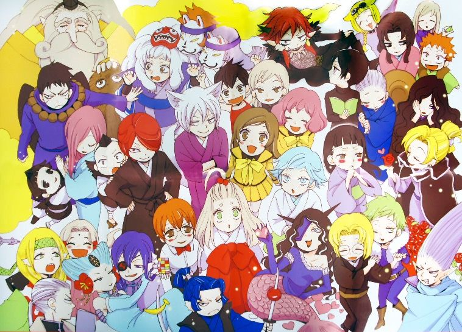
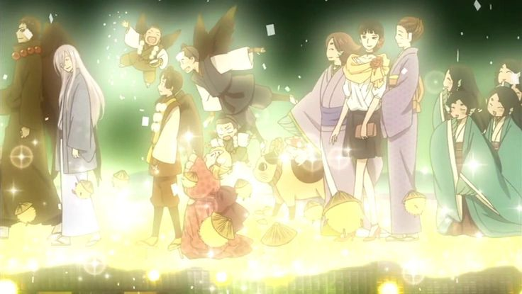

Este anime se basa en la cultura japonesa, junto con la mitología, criaturas sobrenaturales y religiones.
El diseño del anime se inspiró en la prefectura de Saitama, entonces la ciudad de Kawagoe realizó un recorrido donde señalaban las localizaciones más relevantes para la serie. Hicieron postales y hasta una aplicación donde se superponen imágenes de los personajes en localizaciones de la ciudad, además que se realizó una colaboración con el Co-Edo Bus que permite visitar los principales lugares turísticos de la ciudad de Kawagoe.
Kamisama Kiss está profundamente inspirado en el folklore japonés, un universo rico en mitos, criaturas espirituales y leyendas que se entrelazan con la vida cotidiana. La serie mezcla elementos del Shinto y el Budismo japonés, dos religiones que han moldeado la visión espiritual del país durante siglos.
Ambas religiones conviven en el folklore y en la vida espiritual japonesa, y en Kamisama Kiss se fusionan a través de deidades, espíritus y reinos místicos.

En el folklore, los kitsune son zorros mágicos asociados al dios Inari. Pueden cambiar de forma, vivir siglos y son conocidos por su astucia.
🔸 En la serie: Tomoe es un poderoso youkai zorro que sirve a una deidad. Tiene habilidades sobrenaturales y representa la figura clásica del espíritu animal protector pero rebelde.
Las serpientes en Japón son símbolos de agua, fertilidad y cambio. Se les rinde culto como espíritus de los ríos.
🔸 En la serie: Mizuki es un dios serpiente de un santuario olvidado. Representa a los antiguos dioses rurales, solitarios pero amables.
En Shinto, un humano puede heredar un santuario y convertirse en kamisama. Estos dioses locales protegen tierras y personas.
🔸 En la serie: Nanami se vuelve deidad por accidente. Aprende a ejercer su poder con justicia y amor, mostrando cómo lo humano y lo divino pueden mezclarse.
Representa al clásico kami bondadoso que se retira en paz.
🔸 En la serie:Mikage le entrega el santuario a Nanami. Es una figura sabia que simboliza el ciclo de herencia espiritual.
Los tengu son criaturas con alas y poderes mágicos que habitan montañas. A veces traviesos, a veces protectores, representan fuerzas naturales.
🔸 En la serie: Kurama es un tengu moderno disfrazado de estrella de rock. Combina el folklore antiguo con la cultura pop actual.
El Monte Kurama es un sitio real y mítico donde se cree que vivieron los tengu.
🔸 En la serie: Jirou y Soujoubou representan la sociedad jerárquica de los youkai. El primero es rígido y el segundo es sabio.
Muchos youkai en las leyendas son demonios caídos o espíritus corrompidos.
🔸 En la serie: Akura-ou fue un poderoso youkai castigado por los dioses. Simboliza la fuerza oscura y la redención incompleta.
En la mitología japonesa, Izanami es la diosa de la muerte y reina del Yomi, el inframundo.
🔸 En la serie: Nanami la encuentra cuando cruza al mundo de los muertos. Este arco toma elementos del budismo y del mito de Izanami e Izanagi.
Los shinshi son animales sagrados al servicio de los kami, como zorros o serpientes.
🔸 En la serie: Tomoe y Mizuki actúan como familiares. Son guías y protectores, cada uno con su estilo.
En muchas leyendas japonesas, los humanos se enamoran de youkai, lo cual suele terminar en tragedia.
🔸 En la serie: Yukiji es parte del pasado de Tomoe. Su historia mezcla romance, destino y transformación espiritual.
La serie también explora lugares como el Mundo de los Espíritus y el Infierno Japonés, inspirados en conceptos budistas y shintoístas sobre la vida después de la muerte. En estos mundos habitan deidades mayores, seres eternos y jueces espirituales que reflejan cómo el folklore japonés entrelaza la religión y la fantasía.
